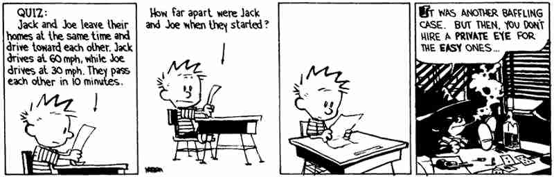

Attività
Didattica
[torna alla pagina
principale - back to home page]

Corsi per l'a.a. 2024/25
Istituzioni di Matematica I
(Corso di Laurea Triennale in Scienze Chimiche)
Orario delle Lezioni
Lunedì
10h-12h Aula La Ginestra - Ed. Cannizzaro CU014
Martedì
12h-14h Aula La Ginestra - Ed. Cannizzaro CU014
Mercoledì
14h-16h Aula La Ginestra - Ed. Cannizzaro CU014
Giovedì
8h-10h Aula A - Ed. Cannizzaro CU014
Venerdì
13h-15h Aula La Ginestra - Ed. Cannizzaro CU014
Testi consigliati:
Istituzioni di Matematica - L. Lamberti
[1] M.BRAMANTI, C.D.PAGANI, S.SALSA, Analisi Matematica 1, Zanichelli.
Programma del corso
Registro didattico
Ulteriori informazioni sono disponibili sul sito
Classroom del corso, al quale vi invito a
registrarvi tenendo conto delle seguenti istruzioni:
1) accedere esclusivamente con il proprio account istituzionale (cognome.matricola@studenti.uniroma1.it);
2) inserire il codice gnsk2t7.
Advanced Topics in Analysis (Analisi Superiore)
(Corso di Laurea Magistrale in Matematica)
Schedule of Lectures
Tuesday
15h-17h Aula B - Dip. di Matematica CU006
Thursday
12h-14h Aula G - Dip. di Matematica CU006
Program of the course
Lecture diary
For further information, please subscribe to the
Classroom website of the course, following the instructions below:
1) use your institutional account (cognome.matricola@studenti.uniroma1.it);
2) use the code eygjlwv.
Regole per esoneri ed esami
Portare con sè un documento per l'identificazione, pena l'esclusione dalla prova.
Cellulari e analoghi dispositivi vanno tenuti spenti e nella borsa/zaino durante la prova.
Corsi per l'a.a.
2023/24
Corsi per l'a.a.
2022/23
Corsi per l'a.a.
2021/22
Corsi per l'a.a.
2020/21
Corsi per l'a.a.
2019/20
Corsi per l'a.a.
2018/19
Corsi per l'a.a.
2017/18
Corsi per l'a.a.
2016/17
Corsi per l'a.a.
2015/16
Corsi per l'a.a.
2014/15
Corsi per l'a.a.
2013/14
Corsi per l'a.a.
2012/13
Corsi
per l'a.a. 2011/12
Corsi per l'a.a. 2010/11
Corsi per l'a.a. 2009/10
Corsi per l'a.a.
2008/09
Corsi
per l'a.a. 2007/08